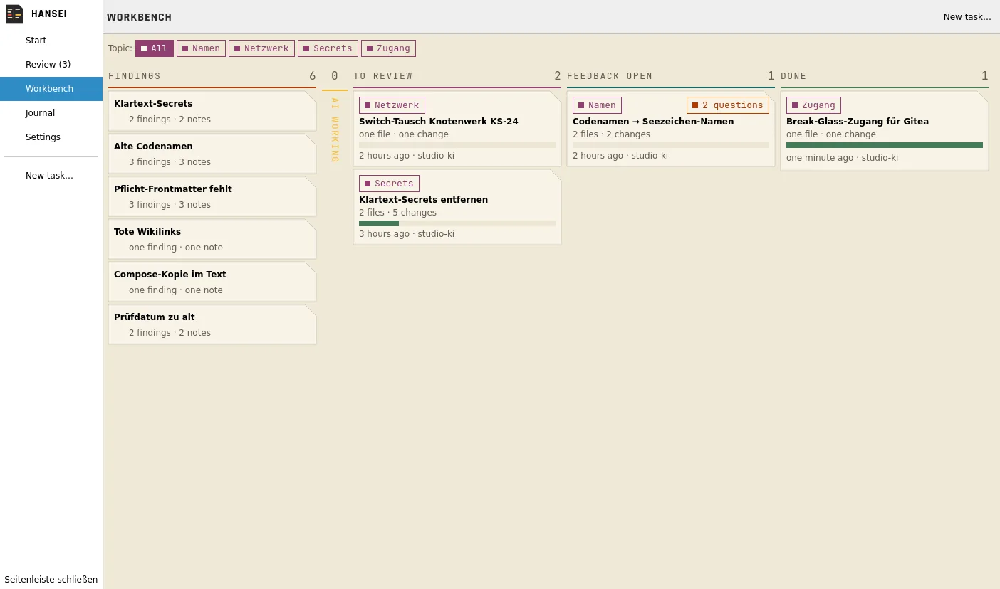

Every change as a diff
Jede Änderung als Diff
Batches on the left, old and new side by side, the conversation with the AI on the right. Accept, reject, edit or give feedback per change, per file or per batch. Keyboard first.
Batches links, alt und neu nebeneinander, das Gespräch mit der KI rechts. Annehmen, ablehnen, bearbeiten oder Feedback geben, pro Änderung, Datei oder Batch. Tastatur zuerst.
Only allowed folders
Nur erlaubte Ordner
Blocked folders are never read, not even for the index. Secrets are replaced by placeholders before anything leaves the machine, and masked in the diff.
Gesperrte Ordner werden nie gelesen, auch nicht für den Index. Geheimnisse werden durch Platzhalter ersetzt, bevor etwas den Rechner verlässt, und im Diff maskiert.
Findings first
Erst die Befunde
Plain-text secrets, old code names, required frontmatter, old review dates, dead wikilinks, compose copies. Code names with a known replacement are fixed without AI.
Geheimnisse im Klartext, alte Codenamen, Pflicht-Frontmatter, alte Prüfdaten, tote Wikilinks, Compose-Kopien. Codenamen mit bekanntem Ersatz werden ohne KI behoben.
From finding to done
Vom Befund bis erledigt
The same batches as a board: findings, AI working, to review, feedback open, done. Repeated feedback becomes a rulebook suggestion.
Dieselben Batches als Board: Befunde, KI arbeitet, zu prüfen, Feedback offen, erledigt. Wiederholtes Feedback wird zum Vorschlag fürs Regelbuch.

How it works
So funktioniert es
Prerequisites
Voraussetzungen
- Linux with KDE Plasma 6 for the app; the terminal UI runs anywhere Go runs
- An Obsidian vault (any folder of Markdown notes)
- A Claude API key, or a local model through Ollama or LM Studio
- Linux mit KDE Plasma 6 für die App; die Terminal-UI läuft überall, wo Go läuft
- Ein Obsidian-Tresor (jeder Ordner mit Markdown-Notizen)
- Ein Claude-API-Key oder ein lokales Modell über Ollama oder LM Studio